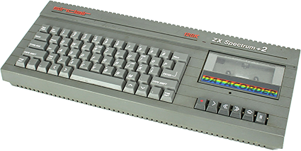
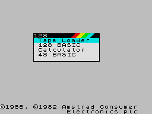
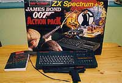

Spectrum +2
When Amstrad took over Sinclair's computer business in 1986, a change in direction for the Spectrum was not long forthcoming. In early 1987, the change came with the launch of the Spectrum +2. It was very different from any previous Spectrum, coming with a proper typewriter keyboard and built-in tape recorder and twin joystick ports. Externally at least, it was very similar to Amstrad's CPC464.

Internally, there were far fewer changes. The firmware was not greatly different from the earlier Spectrum 128, but the ROM had a few changes, causing more compatibility problems with earlier products. It was released in two versions - the +2 in a grey case and the +2A in black. The latter version was, in fact, a Spectrum +3 minus the built-in disk drive.
The familiar quality control problems were, thankfully, largely absent with the +2. The machine was built in Taiwan (making it the first Sinclair product built outside the UK) and Amstrad's greater emphasis on quality control made it far more reliable than the first Spectrums.

Amstrad also took a very different line in marketing the Spectrum +2. Unlike Sinclair, Amstrad did not attempt to market the Spectrum as anything other than a games machine and sold it in packages such as the "James Bond 007 Action Pack" (with bundled games and a light gun). This approach was extremely successful, and the Spectrum +2 sold very well.